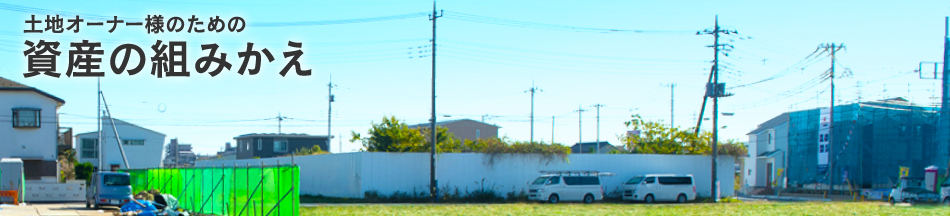

稼げる土地に組みかえる

- ［事例1］
- 稼げない土地を買収して、
都心のマンションを購入 - ［事例2］
- 築古物件で
所得税・相続税を
大幅軽減 - ［事例3］
- アパートに適した土地
なら迷わず
アパートを建築
稼げる or 稼げない 二極化の時代
地価が下がり続けるといっても、すべての土地が同じように値下がりするわけではありません。なかには、値下がりしない（場合によっては値上がりする）稀少な土地もあります。
値下がりしないのは、東京都心を中心に駅から近い住宅地のほか、首都圏の繁華街などになるでしょう。このような場所であれば、オフィスや店舗、住宅などの需要が多いため、賃貸として安定した収益を生み出すことができます。値下がりしない土地＝「稼げる土地」ということです。
それでもやはり、人口が減少して経済情勢も厳しい現在の状況では、多くの土地が値下がりしていくことは避けられません。今、地主さんは、ご自分の土地が「稼げる土地」なのか、そうでない土地なのかを見極める時期にきているといえます。

「値下がりしない優良な土地」に当てはまる条件とは･･･
- ・ 人気がある
- ・ 将来性が見込める
- ・ 安定した収益が見込める
- ・ 換金性があり売却できる
- ・ 相続税の軽減につながる
一見別々のようにも見える5つの要素はすべてつながっています。人気のある場所は、のちのちまで安定した家賃収入が見込めますし、皆が買いたい土地なら取引価格が相続税評価額より割高となり、相続税の軽減にもつながります。
5つの要素のなかで最も大切なことは収益性です。賃貸住宅を建てることで将来にわたって安定的な家賃収入が得られるか＝「稼げる土地」であるかということです。
具体的に「稼げる土地」に当てはまる土地はといえば、住宅地であれば東京都心部、または東京近郊の通勤通学圏内で、駅からも近い場所です。人口が減少しているなかでも、東京にはいまだ人が集まり続けています。「東京ブランド」はまだまだ健在なのです。
では、「稼げる土地」に該当しない場合、どうしたら良いのでしょうか。
答えは「お持ちの資産を組み替えること」。
持っている土地を「稼げる土地」に取り替えることができるのです。